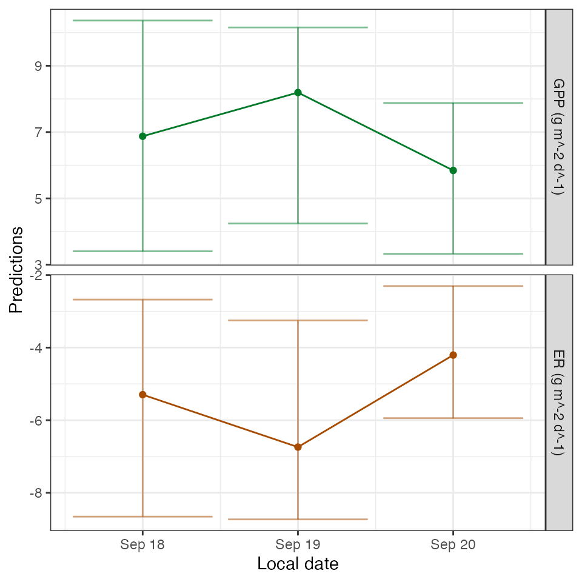
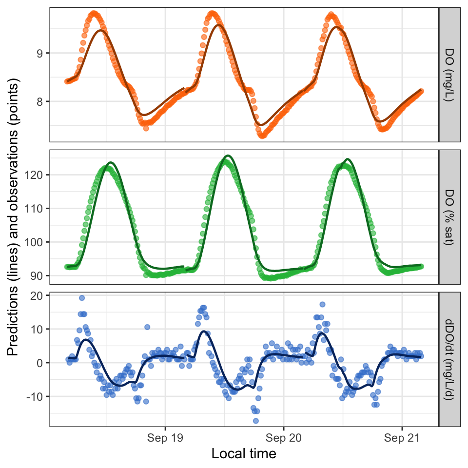
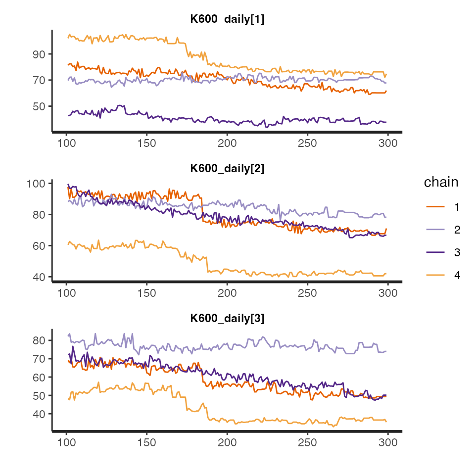

Introduction
This tutorial shows how to estimate stream metabolism using
streamMetabolizer and some example data supplied by Bob
Hall for French Creek in Laramie, WY.
There are four steps to fitting a metabolism model in
streamMetabolizer.
- Prepare and inspect the input data.
- Choose a model configuration appropriate to your data.
- Fit the model.
- Inspect the output.
In this tutorial we will demonstrate these steps for a single model structure and a single set of specifications, but you should also consider other structures and should always tailor the specifications to your dataset and site knowledge. For more details, see:
Preliminaries
If you haven’t already installed the package, see the Installation tutorial.
Next load the R libraries. Only streamMetabolizer is
required to run models, but we’ll also be using dplyr to
inspect the results.
1. Preparing the input data
Load a small example dataset from the package (data are from French
Creek in Laramie, WY, courtesy of Bob Hall). We’ll use the
streamMetabolizer standard in defining our day to run from
4 am (day_start=4) to 4 am (day_end=28).
dat <- data_metab(num_days='3', res='15', day_start=4, day_end=28)See the ?metab help document and the Data Preparation tutorial for more on how to
properly format and inspect a dataset.
2. Configuring the model
There are two steps to configuring a metabolism model in
streamMetabolizer.
- Identify the name of the model structure you want using
mm_name(). - Set the specifications for the model using defaults
from
specs()as a starting point.
2a. Choose a model structure
For this example, we will specify a Bayesian model with both observation error and process error. We won’t pool K600 here because we don’t have many days of data, but pooling is one feature that makes Bayesian models better than MLE models in general. Another great feature of Bayesian models is that they produce more accurate and nuanced confidence intervals.
bayes_name <- mm_name(type='bayes', pool_K600='none', err_obs_iid=TRUE, err_proc_iid=TRUE)
bayes_name## [1] "b_np_oipi_tr_plrckm.stan"2b. Set the specifications
We now pass the model name to specs() to get a list of
default specifications for this model.
bayes_specs <- specs(bayes_name)
bayes_specs## Model specifications:
## model_name b_np_oipi_tr_plrckm.stan
## engine stan
## split_dates FALSE
## keep_mcmcs TRUE
## keep_mcmc_data TRUE
## day_start 4
## day_end 28
## day_tests full_day, even_timesteps, complete_data, pos_disch...
## required_timestep NA
## GPP_daily_mu 3.1
## GPP_daily_lower -Inf
## GPP_daily_sigma 6
## ER_daily_mu -7.1
## ER_daily_upper Inf
## ER_daily_sigma 7.1
## K600_daily_meanlog 2.484906649788
## K600_daily_sdlog 1
## err_obs_iid_sigma_scale 0.03
## err_proc_iid_sigma_scale 5
## params_in GPP_daily_mu, GPP_daily_lower, GPP_daily_sigma, ER...
## params_out GPP, ER, DO_R2, GPP_daily, ER_daily, K600_daily, e...
## n_chains 4
## n_cores 4
## burnin_steps 500
## saved_steps 500
## thin_steps 1
## verbose FALSEAt this point we can alter some of the specifications if desired.
# one way to alter specifications: call specs() again
bayes_specs <- specs(bayes_name, burnin_steps=100, saved_steps=200, n_cores=1, GPP_daily_mu=3, GPP_daily_sigma=2)
# another way: use revise()
bayes_specs <- revise(bayes_specs, burnin_steps=100, saved_steps=200, n_cores=1, GPP_daily_mu=3, GPP_daily_sigma=2)Here I’ve used a very small number of burnin_steps and
saved_steps because I don’t want to wait long for the
vignette to run. When you run your own models, you should bump those
numbers up substantially (to several thousand or so, depending on
exactly which model you’re using.)
Other Bayesian model specifications will also need your close attention when you’re running your own models. See Bayesian Models for details.
3. Fitting the model
Once a model has been configured, you can fit the model to data with
metab(). Bayesian models take a while to run, so be
patient. Or switch to an MLE model if you can afford to sacrifice some
accuracy for speed. (This small example usually takes about 30 seconds
on my computer.)
mm <- metab(bayes_specs, data=dat)4. Inspecting the model
Once you’ve fit a model, you can inspect the output with functions
including predict_metab() and
plot_metab_preds(), predict_DO() and
plot_DO_preds(), get_params(), and
get_fit().
Start by simply printing the model to the console.
mm## metab_model of type metab_bayes
## streamMetabolizer version 0.12.1
## Specifications:
## model_name b_np_oipi_tr_plrckm.stan
## engine stan
## split_dates FALSE
## keep_mcmcs TRUE
## keep_mcmc_data TRUE
## day_start 4
## day_end 28
## day_tests full_day, even_timesteps, complete_data, pos_disch...
## required_timestep NA
## GPP_daily_mu 3
## GPP_daily_lower -Inf
## GPP_daily_sigma 2
## ER_daily_mu -7.1
## ER_daily_upper Inf
## ER_daily_sigma 7.1
## K600_daily_meanlog 2.484906649788
## K600_daily_sdlog 1
## err_obs_iid_sigma_scale 0.03
## err_proc_iid_sigma_scale 5
## params_in GPP_daily_mu, GPP_daily_lower, GPP_daily_sigma, ER...
## params_out GPP, ER, DO_R2, GPP_daily, ER_daily, K600_daily, e...
## n_chains 4
## n_cores 1
## burnin_steps 100
## saved_steps 200
## thin_steps 1
## verbose FALSE
## model_path /private/var/folders/_0/fbg0ffkj6z3fb_7jvm8wg86s81...
## Fitting time: 19.66 secs elapsed
## Parameters (3 dates):
## date GPP.daily GPP.daily.lower GPP.daily.upper ER.daily
## 1 2012-09-18 5.573649 -0.1410918 7.259060 -4.267688
## 2 2012-09-19 3.191503 -0.2813929 10.037324 -2.454561
## 3 2012-09-20 3.806921 -0.2556618 7.123052 -2.693674
## ER.daily.lower ER.daily.upper K600.daily K600.daily.lower K600.daily.upper
## 1 -6.028402 0.3099591 56.90414 2.2314706 73.82301
## 2 -7.968363 0.5319808 31.84568 1.3156141 92.78600
## 3 -5.362254 0.4827049 39.74744 0.7490546 72.03294
## msgs.fit
## 1 w
## 2 w
## 3 w
## Fitting warnings:
## There were 4 chains where the estimated Bayesian Fraction of Missing Information was low. See
## https://mc-stan.org/misc/warnings.html#bfmi-low
## Examine the pairs() plot to diagnose sampling problems
## The largest R-hat is 3.48, indicating chains have not mixed.
## Running the chains for more iterations may help. See
## https://mc-stan.org/misc/warnings.html#r-hat
## Bulk Effective Samples Size (ESS) is too low, indicating posterior means and medians may be unreliable.
## Running the chains for more iterations may help. See
## https://mc-stan.org/misc/warnings.html#bulk-ess
## Tail Effective Samples Size (ESS) is too low, indicating posterior variances and tail quantiles may be unreliable.
## Running the chains for more iterations may help. See
## https://mc-stan.org/misc/warnings.html#tail-ess
## 3 dates: overall warnings
## Predictions (3 dates):
## # A tibble: 3 × 9
## date GPP GPP.lower GPP.upper ER ER.lower ER.upper msgs.fit
## <date> <dbl> <dbl> <dbl> <dbl> <dbl> <dbl> <chr>
## 1 2012-09-18 5.57 -0.141 7.26 -4.27 -6.03 0.310 "w "
## 2 2012-09-19 3.19 -0.281 10.0 -2.45 -7.97 0.532 "w "
## 3 2012-09-20 3.81 -0.256 7.12 -2.69 -5.36 0.483 "w "
## # ℹ 1 more variable: msgs.pred <chr>Here are the daily metabolism predictions from the model:
predict_metab(mm)## # A tibble: 3 × 10
## date GPP GPP.lower GPP.upper ER ER.lower ER.upper msgs.fit warnings
## <date> <dbl> <dbl> <dbl> <dbl> <dbl> <dbl> <chr> <chr>
## 1 2012-09-18 5.57 -0.141 7.26 -4.27 -6.03 0.310 "w … ""
## 2 2012-09-19 3.19 -0.281 10.0 -2.45 -7.97 0.532 "w … ""
## 3 2012-09-20 3.81 -0.256 7.12 -2.69 -5.36 0.483 "w … ""
## # ℹ 1 more variable: errors <chr>
plot_metab_preds(mm)
You can inspect more of the fitted daily parameters, including K600,
with get_params():
get_params(mm)## # A tibble: 3 × 9
## date GPP.daily GPP.daily.sd ER.daily ER.daily.sd K600.daily
## <date> <dbl> <dbl> <dbl> <dbl> <dbl>
## 1 2012-09-18 4.07 2.69 -3.20 2.18 42.5
## 2 2012-09-19 4.08 3.31 -3.22 2.69 39.7
## 3 2012-09-20 3.01 1.99 -2.14 1.52 32.2
## # ℹ 3 more variables: K600.daily.sd <dbl>, warnings <chr>, errors <chr>Here are the first few dissolved oxygen predictions from the model
(DO.mod). They are returned along with the input data for
convenience.
predict_DO(mm) %>% head() date solar.time DO.obs DO.sat depth temp.water light1 2012-09-18 2012-09-18 04:05:58 8.41 9.083329 0.16 3.60 0 2 2012-09-18 2012-09-18 04:20:58 8.42 9.093063 0.16 3.56 0 3 2012-09-18 2012-09-18 04:35:58 8.42 9.105254 0.16 3.51 0 4 2012-09-18 2012-09-18 04:50:58 8.43 9.112582 0.16 3.48 0 5 2012-09-18 2012-09-18 05:05:58 8.45 9.127267 0.16 3.42 0 6 2012-09-18 2012-09-18 05:20:58 8.46 9.137079 0.16 3.38 0 DO.mod 1 8.410000 2 8.406979 3 8.407403 4 8.410073 5 8.414697 6 8.421057
And here are the dissolved oxygen predictions in a figure:
plot_DO_preds(mm)
For Bayesian models only, you can dig even deeper using
get_mcmc, which returns a stanfit object that
can be inspected using the rstan package. (These traceplots
are pretty bad because we used so few MCMC iterations. You should strive
for better in your final models.)

The get_fit() function returns a list of data.frames,
one per temporal resolution, containing all fitted values and details
about their distributions and convergence. Here are just the overall
metrics of model convergence (Rhats, or potential scale
reduction statistics; see Gelman and Rubin 1992 or Brooks and Gelman
1998):
## # A tibble: 1 × 3
## err_obs_iid_sigma_Rhat err_proc_iid_sigma_Rhat lp___Rhat
## <dbl> <dbl> <dbl>
## 1 2.77 2.79 4.16And here is a list of all column names available through
get_fit():
## $daily
## [1] "date" "GPP_mean" "GPP_se_mean"
## [4] "GPP_sd" "GPP_2.5pct" "GPP_25pct"
## [7] "GPP_50pct" "GPP_75pct" "GPP_97.5pct"
## [10] "GPP_n_eff" "GPP_Rhat" "ER_mean"
## [13] "ER_se_mean" "ER_sd" "ER_2.5pct"
## [16] "ER_25pct" "ER_50pct" "ER_75pct"
## [19] "ER_97.5pct" "ER_n_eff" "ER_Rhat"
## [22] "DO_R2_mean" "DO_R2_se_mean" "DO_R2_sd"
## [25] "DO_R2_2.5pct" "DO_R2_25pct" "DO_R2_50pct"
## [28] "DO_R2_75pct" "DO_R2_97.5pct" "DO_R2_n_eff"
## [31] "DO_R2_Rhat" "GPP_daily_mean" "GPP_daily_se_mean"
## [34] "GPP_daily_sd" "GPP_daily_2.5pct" "GPP_daily_25pct"
## [37] "GPP_daily_50pct" "GPP_daily_75pct" "GPP_daily_97.5pct"
## [40] "GPP_daily_n_eff" "GPP_daily_Rhat" "ER_daily_mean"
## [43] "ER_daily_se_mean" "ER_daily_sd" "ER_daily_2.5pct"
## [46] "ER_daily_25pct" "ER_daily_50pct" "ER_daily_75pct"
## [49] "ER_daily_97.5pct" "ER_daily_n_eff" "ER_daily_Rhat"
## [52] "K600_daily_mean" "K600_daily_se_mean" "K600_daily_sd"
## [55] "K600_daily_2.5pct" "K600_daily_25pct" "K600_daily_50pct"
## [58] "K600_daily_75pct" "K600_daily_97.5pct" "K600_daily_n_eff"
## [61] "K600_daily_Rhat" "valid_day" "warnings"
## [64] "errors"
##
## $inst
## [1] "date" "solar.time" "err_obs_iid_mean"
## [4] "err_obs_iid_se_mean" "err_obs_iid_sd" "err_obs_iid_2.5pct"
## [7] "err_obs_iid_25pct" "err_obs_iid_50pct" "err_obs_iid_75pct"
## [10] "err_obs_iid_97.5pct" "err_obs_iid_n_eff" "err_obs_iid_Rhat"
## [13] "err_proc_iid_mean" "err_proc_iid_se_mean" "err_proc_iid_sd"
## [16] "err_proc_iid_2.5pct" "err_proc_iid_25pct" "err_proc_iid_50pct"
## [19] "err_proc_iid_75pct" "err_proc_iid_97.5pct" "err_proc_iid_n_eff"
## [22] "err_proc_iid_Rhat"
##
## $overall
## [1] "date_index" "time_index"
## [3] "index" "err_obs_iid_sigma_mean"
## [5] "err_obs_iid_sigma_se_mean" "err_obs_iid_sigma_sd"
## [7] "err_obs_iid_sigma_2.5pct" "err_obs_iid_sigma_25pct"
## [9] "err_obs_iid_sigma_50pct" "err_obs_iid_sigma_75pct"
## [11] "err_obs_iid_sigma_97.5pct" "err_obs_iid_sigma_n_eff"
## [13] "err_obs_iid_sigma_Rhat" "err_proc_iid_sigma_mean"
## [15] "err_proc_iid_sigma_se_mean" "err_proc_iid_sigma_sd"
## [17] "err_proc_iid_sigma_2.5pct" "err_proc_iid_sigma_25pct"
## [19] "err_proc_iid_sigma_50pct" "err_proc_iid_sigma_75pct"
## [21] "err_proc_iid_sigma_97.5pct" "err_proc_iid_sigma_n_eff"
## [23] "err_proc_iid_sigma_Rhat" "lp___mean"
## [25] "lp___se_mean" "lp___sd"
## [27] "lp___2.5pct" "lp___25pct"
## [29] "lp___50pct" "lp___75pct"
## [31] "lp___97.5pct" "lp___n_eff"
## [33] "lp___Rhat"
##
## $warnings
## NULL
##
## $errors
## NULLYou’re on your way!